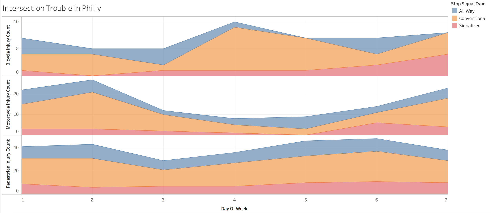
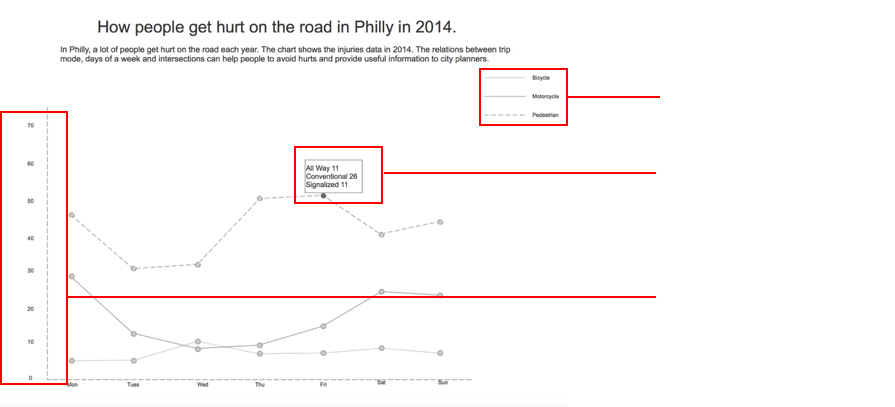
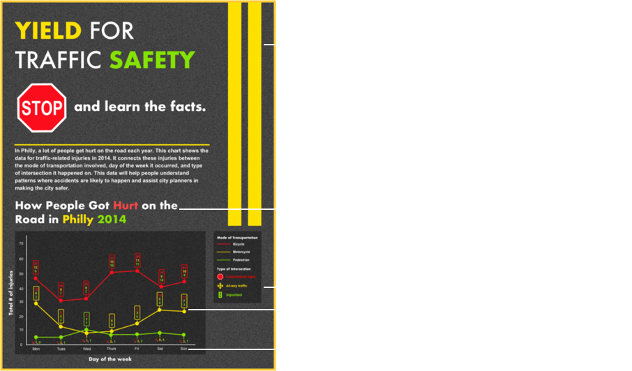

The Datasets Used
GIS_HEALTH.Collisions_crash_2011_2014PUBV.csv
The list of collisions and crashes injury reports of the years 2011 to 2014 in Philly.
Intersection Controls.csv
Intersection data from Philly in 2014.
The Datasets for Interview
We picked the data of trip modes, days of week, and intersection modes, created this dataset in tableau. We want to find some points when users are using this interactive chart.
Link:https://public.tableau.com/views/Data-traffic/Sheet1?:embed=y&:display_count=yes&publish=yes
The Interview Script
1. What do you make of (think about) this graph's design?
2. Can you explain the overall depiction of this graph?
3. Can you find any specific information in this data that is relevant to you?
4. Which day do you think has the most number of collisions?
5. Do you think that the intersections have any connection to the collisions or injuries?
6. What kind of intersection has more trouble?
7. Do you think that the cars are safe from these collisions or injuries?
8. Do you think this graph provided you with enough information?
9. What else would you like to know or see fixed?
10. What according to you is the reason for the collisions leading to injuries?
11. How do you think people can avoid these collisions and injuries?
The Affinity Diagram
We listened the record file of our interview, and wrote all points on the sticky notes.

Then we reorganized them as different categories.

Findings Summary
Design
1. Colors help increase the visual aspect of differentiating data
2. Hover information is well received if the user knows what to do to get the data from certain hover points.
3. The legend of any chart or graph needs to be very easily visible for the user to interpret the data.
4. Icons and Interaction Assistance is required for the user to know what to do.
5. Colors have to be chosen according to the subject matter for convenience and quick understanding.
6. Lack of direction and differentiation in the chart or graph can confuse or mislead a reader.
7. Text in all labels should be horizontal and not vertical for user readability.
8. 50% of the users could understand the data on the chart/ graph provided.
9. 20% of the users did not know how to interpret the data.
10. The parameters have to be accurate and also labelled in a way that the user can extrapolate data in an easy manner.
11. All measurements need to have a unit of measurement without which the data cannot be quantified in any way possible.
Crash
1. People crash because they drive fast, don't pay attention to the road or don't obey the rules of the road.
2. Cars also have a lot of accidents, and conventional signals sign have the most intersection troubles.
3. People should pay more attention to the surrounding especially the signal, slow down and follow the road rules when they are walking or driving.
4. Should have the data of car accidents and make comparisons of all of them.
5. Should explain what specific intersection it is.
6. People focus more on specific transportation they use the most.
Draft Stories
How people get hurt on the road in Philly in 2014.
I picked the data from days of week, trip modes and intersections to describe the situation of transportation injuries.
Link:http://8qeu07.axshare.com/#g=1&p=page_1
Wireframe
Link:http://lqxf3y.axshare.com/
Visual Design
Validation Research
I took the wireframe and visual design to 8 users, these are the top five findings in the interview.
1. Need to provide the data of more transportations, just pedestrian, motor and bicycle can't represent the overall situation. The injuries of car is a very important data.
2. Don't show too much data at the same time on the page. Hover to show more data is better. But it should be a guide to tell users that hover can get more informations.
3. Should consist the style of same type of data. These three lines should focus on the same style guide.
4. The colors of the transportation and intersections can't be the same. Users are confused about what the color means in different area.
5. Focus on the color and the font size to make the chart more readable. Red font on the dark background is hard to read.
Next Step
1. Improve the wireframe, try to add more trip mode.
2. Amplify the chart size, increase the font size, to make people can see it clearly.
3. Improve the chart library ,and add some icon to explain what the intersection it is on the chart.
4. Add interaction of the visual design image.
5. Have some sentence or pattern to tell users how to interact with data.
Improved Design